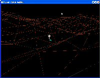
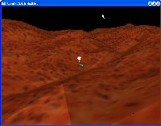
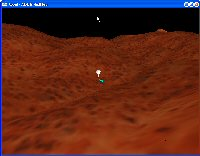
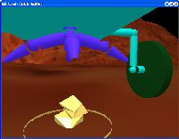
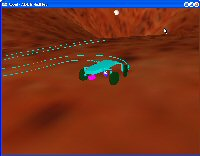
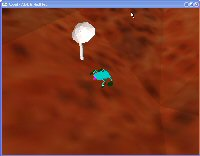
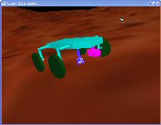

The goal of this project oriented course was to write a 3D interactive application. We programmed a robot that navigates on a Mars like 3D landscape. The robot has got an articulated arm allowing it to lift stones from the ground. There are several cameras (outside view, robot view, free cam) and display modes (wireframe, flat shading, gouroud shading).
You can download the source code, a Linux binary, a Windows binary and a Sun Solaris binary.
At first we wanted the robot to move in a very realistic way. We finally realized that this involved writing a lot of extra code (physics engine that takes friction into account). So we ended up with something that looks nice but is not always realistic.
We used backface culling in order to improve the display speed. This improves the wireframe view too, since it removes some hidden lines.
The code is written in C and compiles under Windows, Solaris and Linux. In order to have portable code, we used the OpenGL and GLUT libraries.
The right mouse button is used to bring up a context menu (that is used to change views or control modes).
W, S, A, D control the camera (up, down, left, right). X and Y control the zoom. When using the robot view, F and R control the tilt. The free cam is controlled using the mouse.
The robot can be in two modes, vehicule or arm. In both cases the keys I, K, J, L are used to control the up, down, left, right directions. When in arm mode, the space bar allows the robot to pick and release stones.
T allows the view to be toggled between flat shading and wireframe.
These images show how our world looks like when viewed as wireframe, flat shadding and gouraud shading. As you can notice, the gouraud shading is the best, but requires more processing time (the light normal is interpolated across each triangle).
The 3D landscape was generated using a random fractal algorithm known as square-diamond. One of the limitations of generating the landscape with a simple algorithm like our's is that we don't have bridges and tunnels, which would have really looked nice.
The parabolic antenna is defined as a triangle mesh. It's tickness is null, so we used a trick to display it correctly when viewed from the back: we created a copy with the normals flipped. The normals for the flat and gouraud shading were calculated using the gradient of the parabolic function.
We have some other special objects (volcano generated using the revolution (lathe) method, body of the robot generated using extrusion).
The last image illustrates our robot picking up a stone. There are many other goodies in our code, so you can download the exectuable or source code and enjoy our Mars rover project.
|  |  |
| wireframe | flat shading |
|  |  |
| gouraud shading | robot's view camera |
|  |  |
| robot with wheel traces | antenna |
|  | |
| robot picking up rock |
{kind=link}
{kind=link}
{kind=link}
{kind=link}
{kind=link}
{kind=link}
{kind=link}